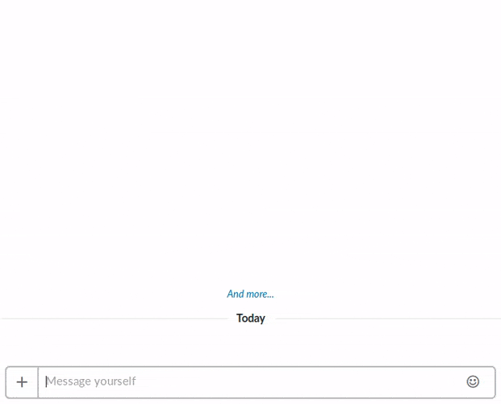
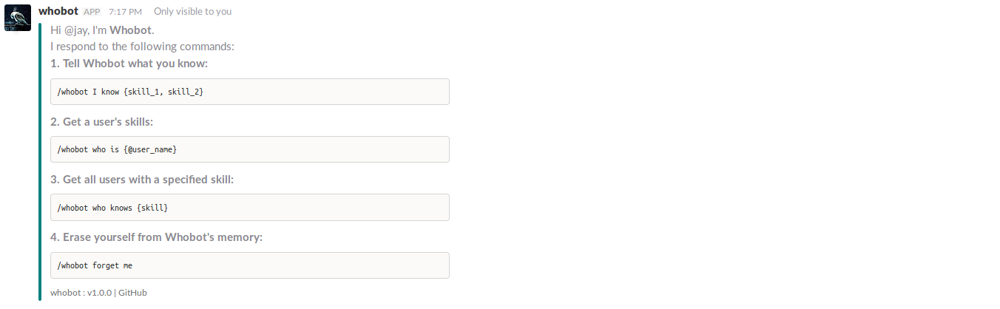
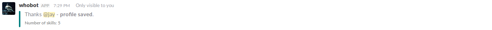
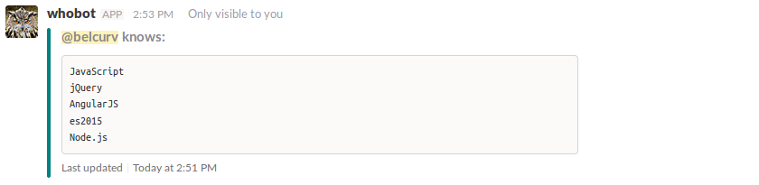
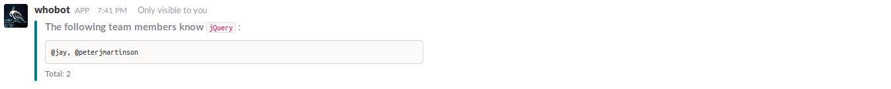

a Slack /slash command
Purpose: Whobot remembers skills you give it to describe yourself, and can recall other team members' skills on command. Whobot is opt-in - it will only remember your skills if you tell it to, and will forget about you if instructed to do so.

How to Use:
/whobot Show the Whobot about & help message
/whobot
/whobot I know <skill>, <skill> Tell Whobot about you. Include a comma-separated list of skills you know.
/whobot I know JavaScript, jQuery, Angular, es6, Node
/whobot who is @user_name Ask Whobot about another team member to discover which skills they claim to know.
/whobot who is @jay
/whobot who knows <skill> Retrieve a list of all users who know your specific skill.
/whobot who knows jquery
/whobot forget me Remove all knowledge of yourself from Whobot's memory.
/whobot forget me